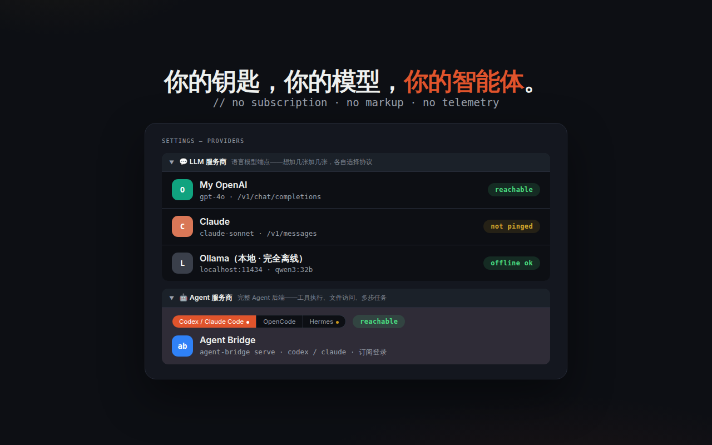

指南 / 连接后端
连接后端
browsa 没有账号、没有订阅、不加价——它只是把你自己的模型接口搬进侧边栏。 云端的、本地的、自建的，都行。
两类后端
- LLM 提供商——普通对话端点，覆盖市面上几乎所有服务：OpenAI、Anthropic、Ollama、Groq、LiteLLM、各种聚合网关。
- Hermes Agent——自带工具执行的自托管智能体：能搜索、跑命令、操作文件，是「能做事」的后端。内置在 browsa 里，填个地址就能用。
配一张提供商卡
打开 ⚙ 设置 → LLM Providers。页面上预留了一张空的 LLM 1 卡，填完点 Save 即生效；也可以用 ＋ Add Provider 随时加卡：
| 字段 | 填什么 |
|---|---|
| Alias（别名） | 你起的名字，如「My OpenAI」「本地模型」——显示在侧边栏下拉里，多张卡靠它区分 |
| Base URL | 到根路径即可，如 https://api.openai.com，协议路径自动补全 |
| API Key | 你的密钥，只存本机（见隐私） |
| Model ID | 必填，如 gpt-4o；逗号分隔可填多个——一张卡覆盖一个网关上的全部模型 |
| API 协议 | 该端点说的语言：Chat Completions / Responses / Anthropic |
保存后点 Ping：验证连通性并自动识别模型能力。第一个 Ping 通的提供商会自动设为当前使用；之后在侧边栏顶部下拉里随时切换，多模型的卡会按「别名 · 模型」逐个列出。

Hermes Agent
Hermes 是自托管 AI 智能体，带搜索、终端、文件、记忆等内置工具。browsa 用它的 /v1/runs 协议——比普通对话多出工具执行进度直播和危险操作审批卡（先批准，再执行）：
- 安装：
pip install hermes-agent（或按官方指引）； - 在
~/.hermes/.env里加API_SERVER_ENABLED=true和API_SERVER_KEY=你的密钥； - 启动：
hermes gateway，看到API server listening on http://127.0.0.1:8642即成功； - 在 browsa 设置里选中 Hermes Agent 卡，填 Base URL（如
http://127.0.0.1:8642）与 API Key，Ping 验证。
Hermes 卡固定存在、不可删除，只需 Base URL 和 Key——协议自动识别，服务端不支持 /v1/runs 时会自动回退到普通对话。
Ollama 本地模型
本机跑 Ollama 的话，Base URL 填 http://localhost:11434，API 协议选 Chat Completions（Ollama 兼容 OpenAI 格式）。模型 ID 填已拉取的模型名，如 qwen3:32b。完全离线也能用。
Ping 不通？按顺序核对：Base URL 是否到根路径（不要带
/v1/chat/completions 尾巴）；Key 是否有效；本机模型是否已启动；公司网络是否拦了该域名。报错信息在侧边栏的错误卡里有分类说明，原始错误可展开复制。